ご注文の操作手順
当サイトでご注文にあたっての操作手順について
新聞折込チラシは、新聞折込配布エリアを選択して、折込希望地域・枚数などを選択することでご注文ができます。オリコメイトでは、新聞折込したい地域をお客様自身で地図から詳細に選択できます。
STEP１新聞折込配布エリアを開く
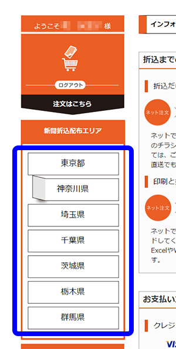ホームページ左にある「新聞折込配布エリア」から
ご希望の都道府県をクリックして下さい。
STEP２市区町村・新聞銘柄・枚数・その他仕様を選択
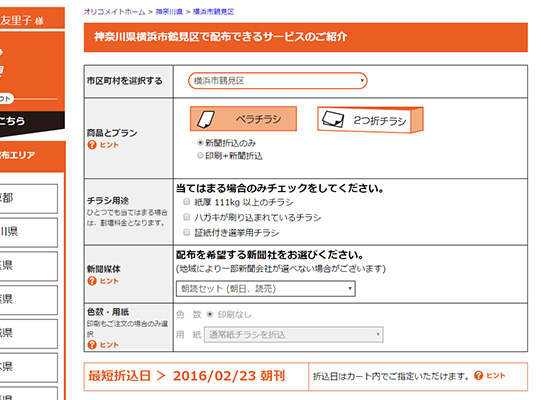
仕様・新聞銘柄・紙の種類や部数を変更できます。
お求めの商品がございましたら価格をクリックしてください。
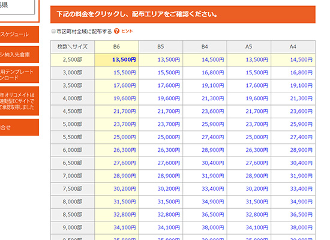
STEP３配布エリアを指定
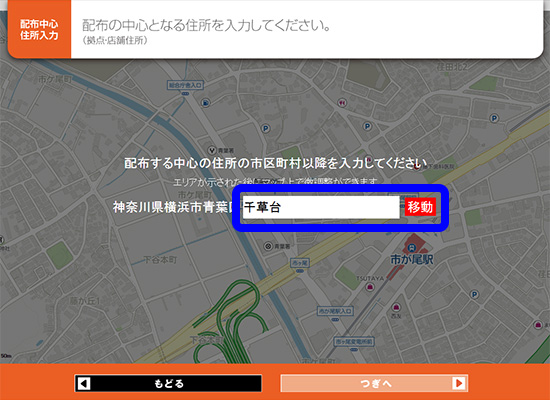
地図上のアイコンをドラッグすることで、配布する範囲や重視するポイントをご指定できます。
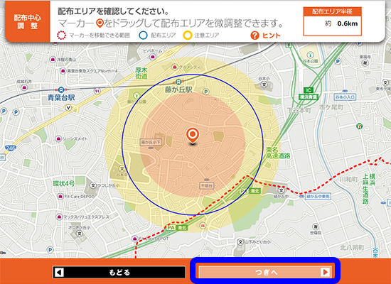
STEP４ご注文内容を確認
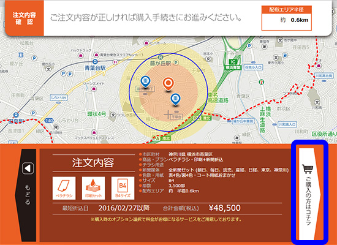内容に誤りがある場合は、画面下部の「もどる」ボタンから選択しなおしてください。
※ブラウザの「戻る」ボタンは使用しないでください。
STEP５ログインして発注に進む
「STEP4」のご注文内容を確認後、問題がなければ「ご購入の方はコチラ」ボタンを押してください。
ログインされていない場合、マイページへのログイン画面が表示されます。
会員登録が既にお済みのお客様
登録時に発行されたIDとパスワードを入力します。
入力完了しましたら、次の画面（内容入力画面）をクリックしてください。
会員登録が未だお済みでないお客様
会員登録画面にお進みいただき、その後次の画面（内容入力画面）へ
STEP６商品情報の入力
商品情報の入力では、チラシの内容・業種、紙面タイトルをご入力いただきます。
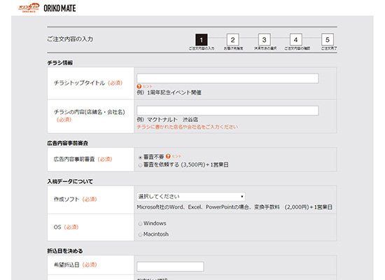
＜広告内容事前審査＞
法律や条例に則り、広告内容の審査を申し込むことができます。
ご希望の方は審査依頼をお申し付けください。※広告内容事前審査については「広告基準審査」をご覧ください
＜入稿データについて＞
※印刷+折込をご希望の方のみデータ作成に使用したアプリケーションとOSをお知らせください。
不明な場合はデザイン作成者様にお問合せくださいませ。また、入稿データについては「データ入稿の方法と注意点」をご覧ください
＜折込日を決める＞
ご希望の折込日をご指定ください。※「ゆったり配布」をお選びいただくと割引対象となります。
「ゆったり配布」については、よくあるご質問ページの「ゆったり配布とは何ですか？」をご覧ください
＜増刷注文＞※印刷+折込をご希望の方のみ
無料でお届けする印刷予備（約50部）以外で、別途必要な方はご希望の枚数をご指定ください（有料）。
※増刷注文についてはコチラもご覧ください
＜備考＞
その他、気になる点やご要望等あればご自由に入力ください。
※ ご希望に添えない場合もございます。詳しくは、よくある質問Q＆Aをお読みください。

以上のご入力が終わりましたら、「次へ」ボタンをクリックしてお進みください。
STEP７ご登録者情報の確認
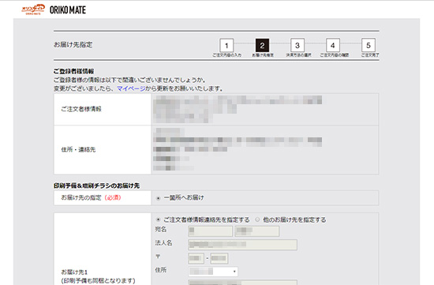
＜ご登録者情報、住所・連絡先＞
ご登録者様の情報にお間違いがないかご確認ください。
変更がございましたらマイページより変更・更新をお願いいたします。
＜印刷予備の差出人とお届け先＞
※印刷+折込をご希望の方のみ
チラシ印刷予備のお届けに必要な情報をご選択ください。
増刷を注文された場合は、複数の住所へお届け可能です。
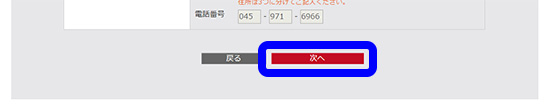
印刷予備・増刷注文についてはコチラもご覧ください
ご確認・ご入力が終わりましたら、次へお進みください。
STEP８決済方法
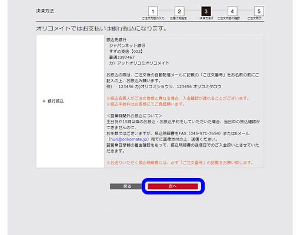
お支払いは銀行振込のみとなります。「次へ」ボタンをクリックしてお進みください。
詳しくは、お支払い方法のページをご覧ください。
また、お見積書・ご請求書・領収書については「お見積書・ご請求書・領収書について」をご覧ください。
STEP９ご注文内容の確認
＜ご注文内容のご確認＞
チラシタイトル・折込地域・枚数など、ご注文内容に誤りがないか、ご確認をお願いします。
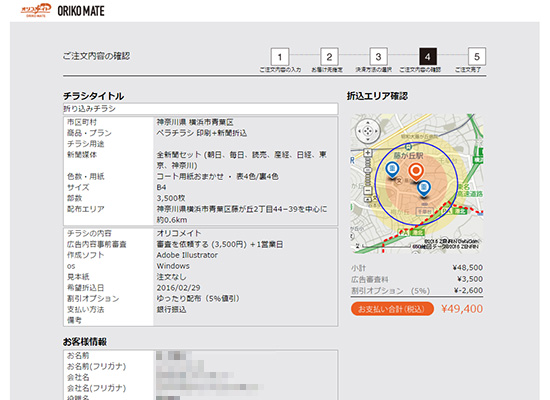
＜お客様情報のご確認＞
お客様の住所・連絡先、印刷予備（印刷+折込をご注文の方）のお届け先・差出人の情報に誤りがないか、ご確認をお願いします。
＜ご注文内容の修正＞
ページ内の「戻る」ボタンより内容を修正できます。現在のご注文を進める場合は、ご利用規約をお読みいただき「同意して注文する」のボタンを押してください。
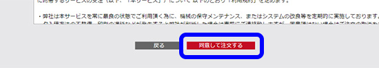
STEP１０お支払い
＜銀行振込＞
ご注文後の自動配信メールをご確認の上、お振込ください。各種お支払いについては、「お支払い方法について」をご確認ください。
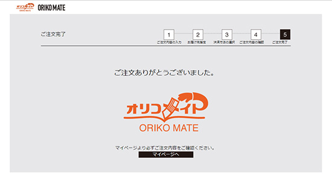決済が終わりますと、ご注文完了です。
ご注文完了後、チラシ納入、イメージ入稿または、データ入稿をお願い致します。
ご注文から折込までの流れ
STEP１新規会員登録
新規会員登録はお済みでしょうか？
まずは新規会員登録をしていただき、ID・パスワードをご取得ください。
会員様へは、購入時のオプション選択で料金がお得になるサービスをご用意しております！
新規会員登録後、自動配信メールにて登録完了の通知をいたします。
STEP２WEBサイトよりご注文
商品の中からご希望の商品を選択し、価格表より価格をクリックしてください。
次のページで、折込エリアを選定して、ID・パスワードをご入力後、注文フォームより必要事項をご入力ください。
ご注文後、自動配信メールにて「ご注文内容のご確認」の通知をいたします。
STEP３ご決済
お支払いは銀行振込のみとなります。
ご決済完了後、作業を開始いたします。
詳しくは、お支払い方法のページをご覧くださいませ。
STEP４チラシ納品/データ入稿
＜折込のみの方＞
指定倉庫へチラシを納入ください。
チラシは、指定倉庫へチラシ納入締切日の15時までに納入していただきます。
指定倉庫やチラシ納入締切日については、ご注文後の自動配信メールにてお知らせいたします。
※納入が遅れますと、ご指定頂いた折込日に実施できない可能性があります。
各締切日についてはこちらのページも併せてご覧くださいませ。
チラシ納入先倉庫一覧はコチラ
＜印刷+折込の方＞
（１）データをご入稿ください。
- ※マイページ入稿いただく場合、1回のアップロードの最大データ容量は１GBまでとさせていただきます。
- ※複数回に分けてのご入稿はいただけません。必要なデータをすべて１つのフォルダに入れ、フォルダごと圧縮いただきますと１つの圧縮ファイルになりますので、圧縮ファイルをご入稿ください。
（詳しくは”データ圧縮の方法”）
- ※ご利用の回線により最大送信ファイルサイズは異なりますが、当社システムでは1つのファイルサイズが１GBまでの受信が可能です。お客様が利用する回線により、データ転送速度は大きく異なります。転送が1分以内に完了しない場合は、データを軽くしていただくか、別の入稿方法をお選びください。
- ※データは、ご入稿締切日の24時までに入稿していただきます。
- ※データ入稿が遅れますと、ご指定頂いた折込日に実施できない可能性があります。
入稿については「データ入稿ガイド」をご確認ください。
各締切日については「締切スケジュール」にて確認が可能です。
（２）データチェック
- ・ご入稿いただいたデータに不備がないか弊社で確認いたします。※データチェックとは、データが印刷可能であるかを確認するものです。よって、デザイン・文字やレイアウト・画質・オーバープリントによる色など、内容に関するものは対象外となります。
- ・ご入稿データに不備があった場合は、メールにて「再入稿依頼」の通知をいたします。
（３）印刷
オフセット印刷の場合は、印刷用プレートに刷版を行い、オフセット印刷機にて印刷作業を行います。
オンデマンド印刷の場合は、オンデマンド機にデータを送り印刷作業を行います。ご注文枚数によって、安価な印刷方法を弊社にて選択させていただきます。
（４）印刷予備（無料/約50部）・増刷注文（有料）
印刷完了後、印刷予備（約50部）をお届けいたします。
印刷予備（約50部）以外にも必要な場合は、有料にて増刷いたします。※増刷注文については、商品情報入力ページよりご希望枚数をご指定ください。
印刷予備・増刷注文については「印刷予備・増刷注文の送付について」をご覧ください
STEP５新聞折込を手配
弊社にてチラシ現物を確認し、問題がないことを確認した後、ご指定いただいた地域へ新聞折込の手配をします。
STEP６完了報告
新聞折込の手配完了です。
メールにて、全ての手配が完了したことを、ご報告させていただきます。
イメージ入稿について
「新聞折込のみ」をご注文のお客様には、チラシイメージのご入稿（ご提出）をお願い致しております。
- ・当社に納入していただいたチラシを、他のご注文のチラシと区別する目的で「携帯で撮影したチラシの写真や、デザイン制作時のカンプ、PDF」をチラシイメージとしてご提出いただいているものです。
- ・チラシイメージは、ご注文後マイページからご入稿いただくか、FAXにてご提出ください。
【マイページからのご入稿方法】
・チラシ全体（両面）が判るよう、なるべく鮮明なチラシイメージをご用意ください。
STEP１表面と裏面が別々のファイルの場合は圧縮して1つのファイルにまとめます
チラシが片面刷りの場合は、圧縮不要です。
STEP２マイページにログインします
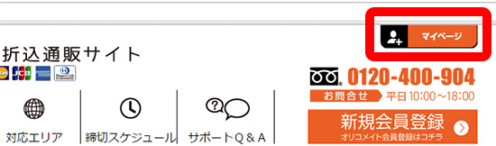
STEP３イメージ入稿の「入稿」をクリックし入稿ダイアログを開きます
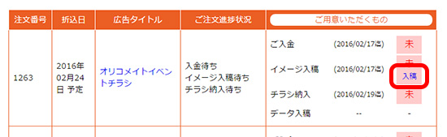
STEP４入稿ダイアログの「ファイルを選択」をクリックし、お送りいただくイメージファイルを選択します
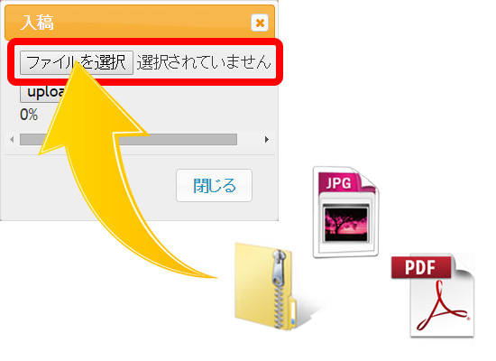
STEP５「upload」をクリックし、完了したらダイアログを閉じてください
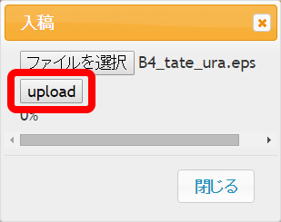
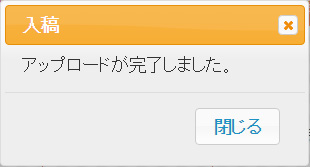
【FAXでのご提出方法】FAX番号：045-971-7654
- ・チラシ全体（両面）が判るようFAXに通らない大きさの場合は一度、縮小コピーするなどしてお送りください。
- ・FAX送付状に、「ご注文番号」「送信日」「ご注文者様氏名」「お電話番号」を記入いただき、チラシイメージを送信下さい。
- ※チラシイメージ自体にご注文番号をご記入いただいてもFAXでは判別できない為、必ず送付状をつけてください。
チラシ納入先倉庫
チラシ納入先（指定倉庫）は、新聞折り込みを実施する都道府県（または市区）によって異なります。
ご注文後、マイページよりチラシ納入先をご確認ください。
- ※チラシ納入は、本サイトでのご注文後にお願い致します。ご注文前の納入は受注とチラシの照合ができない為、ご遠慮ください。
- ※極力、宅配便や運送会社での納品をおねがい致します。
- ※ご注文後の自動配信メールでも指定倉庫の案内をしております。
- ※チラシは納入締切日の17時までに納入ください。
- ※納入が遅れますと、ご指定頂いた折込日に実施できない可能性がございます。
- ※お客様が、直接指定倉庫まで納入いただく場合は、必ず「アット折込」扱いとして、お持込いただき、「注文番号」を添えて納入ください。
- ※チラシの納入にかかる送料は、お客様のご負担となります。ご了承ください。
- ※横浜都筑センターの閉鎖に伴い、10月1日（土）折込分より神奈川県及び町田市へ折込分のチラシ納品先が変更となります。 詳しくはこちらを参照ください。
アット折込 横浜都筑 【9月30日折込分まで】
〒224-0053
神奈川県横浜市都筑区池辺町3410 オリコミＰＲ 内
新聞折込取扱い地域：神奈川県、東京都町田市
アット折込 アドポート神奈川 【10月1日折込分から】
〒243-0301
神奈川県愛甲郡愛川町角田501-1オリコミＰＲ 内
新聞折込取扱い地域：神奈川県、東京都町田市
アット折込 埼玉
〒352-0011
埼玉県新座市野火止1-12-56 西武運輸倉庫 内
新聞折込取扱い地域：東京都23区、埼玉県
アット折込 アドポート三郷
〒341-0059
埼玉県三郷市インター南1-4-2GLP三郷Ⅲ-2階オリコミＰＲ 内
新聞折込取扱い地域：東京都多摩地方（町田市以外）
アット折込 ビッグデポ千葉
〒277-0872
千葉県柏市十余二380-15 オリコミＰＲ 内
新聞折込取扱い地域：千葉県
アット折込 茨城
〒300-0066
茨城県土浦市虫掛3678 朝日オリコミ茨城 内
新聞折込取扱い地域：茨城県
アット折込 栃木
〒321-0901
栃木県宇都宮市平出町3734-4 栃木オリコミセンター 内
新聞折込取扱い地域：栃木県
アット折込 群馬
〒370-0033
群馬県高崎市中大類町120-4 群馬総合輸送 内
新聞折込取扱い地域：群馬県

 オリコメイトは、2012年に神奈川県の経営改革計画で、初めてのMAP連動型ECサイトとして承認取得しました。
オリコメイトは、2012年に神奈川県の経営改革計画で、初めてのMAP連動型ECサイトとして承認取得しました。